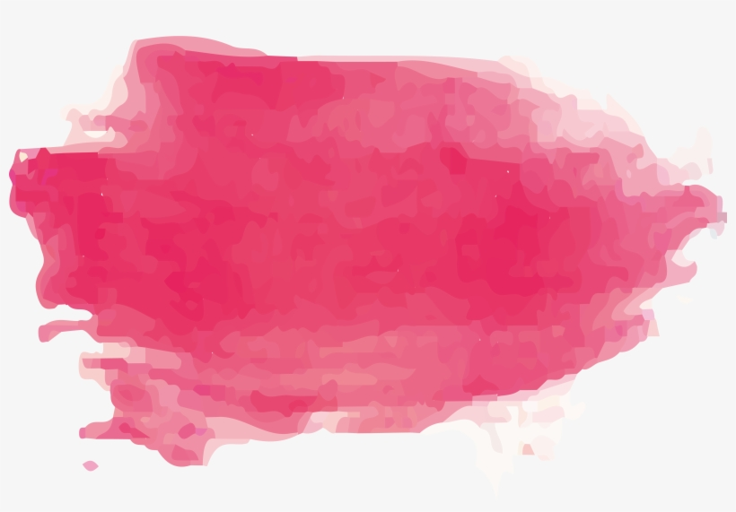
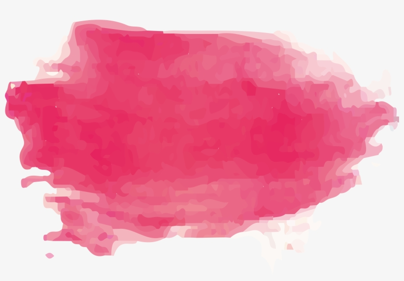

Html
<h1 id="title">
Apprentissage JS
</h1>
<div class="content">
<div>
<button class="anim" onclick="Button()">
Animation
</button>
</div>
</div>CSS
.animation{
transform: rotate(180deg)!important;
transition: transform 0.1s;
}javascript
function Button(){
document.getElementById("title").classList.toggle("animation")
}Explication
Pour cette animation, on injecte une classe css dans une balise html,
Grace au js, on récupere l'Id de notre titre "title" avec :
"document.getElementById("title")"
cela nous permet d'envoyer la class "animation" avec le js :
".classList.toggle("animation")"
Dans cet exemple, la classe "animation" contient l'element
"transform: rotate(180deg)!important;" avec un delai de 0,1s : "transition: transform 0.1s;"
Le QuerySelectAll !!!
Le QuerySelectorAll nous permet de selectionner n'importe quel groupe d'éléments
(dans notre cas des balises "li"),
pour leurs donner des instructions à l'aide d'un "for each". Ici, nous cherchons à créer
un effet hover sur les "ul li" de la nav bar.
var li = document.querySelectorAll("li")li.forEach((e)=>{
e.addEventListener('mouseover', f => {
e.classList.toggle("li-hover")
})
})
li.forEach((e)=>{
e.addEventListener('mouseout', f => {
e.classList.toggle("li-hover")
})
})Le Dark Mode !!!
La fonction addEventListener "onclick" permet de créer un évennement après un clique sur le bouton "dark mode". Une div (id="darkmode") est crée sous le body, pour nous permettre de modifier le style de l'ensemble du document. La fonction "classList" permet de créer une nouvelle class dans la div darkmode (html) cette class est également assignée en CSS, cette nouvelle class sera supprimée de la div avec la fonction "toggle" après un nouveau clique sur le bouton Dark Mode.
var darkmode = document.getElementById("darkmode")
var darkbutton = document.getElementById("darkbutton")
darkbutton.addEventListener('click', e=>{
darkmode.classList.toggle("darkmode")
})<div id="darkmode"> <div><div id="darkmode" class="darkmode"> <div>.darkmode{
background-color: gray;
color:cornsilk;}Une image qui change de comportement au survolage de la souris

Html
<div id="idimg">
<img id="imagehover" src="img/jsimage.png">
</div>
CSS
#imagehover{
-webkit-filter: grayscale(100%);
margin-top: 5%;
width: 15%;
height: 15%;
transition: width 1s, height 1s, transform 1s;
}
#imagehover:hover{
-webkit-filter: grayscale(0%);
width: 25%;
height: 25%;
transform: rotate(360deg);
}
Explication
Cette animation n'a pas besoins de javascript,
tout se passe en CSS lorsqu'on passe la souris sur l'element avec l'atribu ":hover"
"-webkit-filter: grayscale(100%);" permet de mettre l'image en noir et blanc
"-webkit-filter: grayscale(0%);" permet de la remettre en couleur
"transition: width 1s, height 1s, transform 1s;" permet de gerer le délais de l'animation (taille, rotation)
Une image qui tourne en boucle

Html
<div id="idimg">
<img id="imagerotate" src="img/css.png">
</div>
javascript
var element = document.getElementById("imagerotate").animate([
{
transform: "rotate(360deg)"
}
], {
duration: 5000,
iterations: Infinity
});Explication
Pour cette animation, on recupère l'Id de l'image avec :
"document.getElementById("imagerotate")" Ensuite on applique une animation :
"animate([{transform: "rotate(360deg)" }"
dans ce cas, c'est une rotation de 360°, et a la fin du code,
on mets la durée de rotation ainsi que le nombre de répetition
"{duration: 5000,iterations: Infinity});"
Html
<h1 id="title">
Apprentissage JS
</h1>
<div class="content">
<div>
<button class="anim" onclick="Button()">
Animation
</button>
</div>
</div>CSS
.animation{
transform: rotate(180deg)!important;
transition: transform 0.1s;
}javascript
function Button(){
document.getElementById("title").classList.toggle("animation")
}Explication
Pour cette animation, on injecte une classe css dans une balise html,
Grace au js, on récupere l'Id de notre titre "title" avec :
"document.getElementById("title")"
cela nous permet d'envoyer la class "animation" avec le js :
".classList.toggle("animation")"
Dans cet exemple, la classe "animation" contient l'element
"transform: rotate(180deg)!important;" avec un delai de 0,1s : "transition: transform 0.1s;"
Une image qui change de comportement au survolage de la souris
Html
<div id="idimg">
<img id="imagehover" src="img/jsimage.png">
</div>
CSS
#imagehover{
-webkit-filter: grayscale(100%);
margin-top: 5%;
width: 15%;
height: 15%;
transition: width 1s, height 1s, transform 1s;
}
#imagehover:hover{
-webkit-filter: grayscale(0%);
width: 25%;
height: 25%;
transform: rotate(360deg);
}
Explication
 
